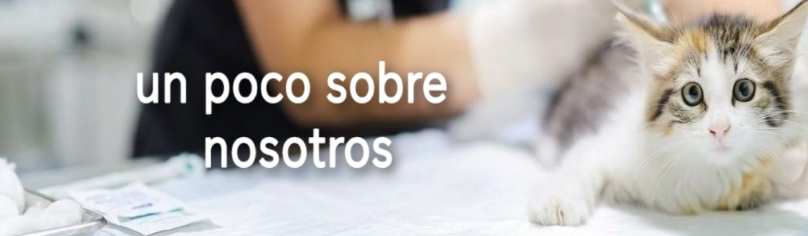
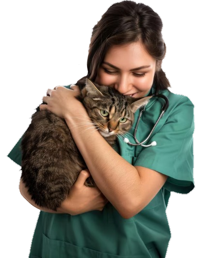

Aldair Diego
Bustamante
Somos la veterinaria "patitas felices" una veterinaria que tiene como gran mision ayudar a los peluditos de la casa.
Tenemos como objetivo ayudar a la mayor cantidad de felinos y caninos de nuestro pais por lo que recomendo llevarlos a citas con nuestros profesionales de manera continua .

QUE HACEMOS?
Nos encargamos de ayudar a tu mascota de manera de manera eficaz.
El cuidado de sus mascotas esta en buenas manos. Tenemos a profesionales, pero tambien a grandes amantes de los animales.
Recomendamos llevar a sus gatitos y perritos a constantes citas y chequeos sobre su salud, para descartar peligros futuros en su salud, recomendamos consultar si el animal esta teniendo una alimentación sana y en caso de que no sea asi consultar una dieta para regular el peso del animal.
Puedes consultar tambien sobre el aseo o la higiene de su mascota, en "patitas felices" podemos ayudarlos con la limpieza y regularizavion del pelaje de su fiel amigo.
Podemos recetarles diversos medicamentos y alternativas para poder neutralizar lesiones o heridas abiertas de sus mascotas, jamas automedique a sus mascotas, tome siempre la receta de un profesional para el alivio de su perro y gato.
para nosotros ser veterinarios es ayudar y proteger a los animales, nuestra labor siempre es de manera honesta o la mayor positivad ante cualquier caso.
Para nosotros, tu mascota no es un paciente más: es parte de nuestra gran familia. Estamos aquí para cuidarla, protegerla y hacer que su visita al veterinario sea lo más divertida posible,
"Cuidamos a los que más quieres, con la ciencia que necesitan y el amor que se merecen."